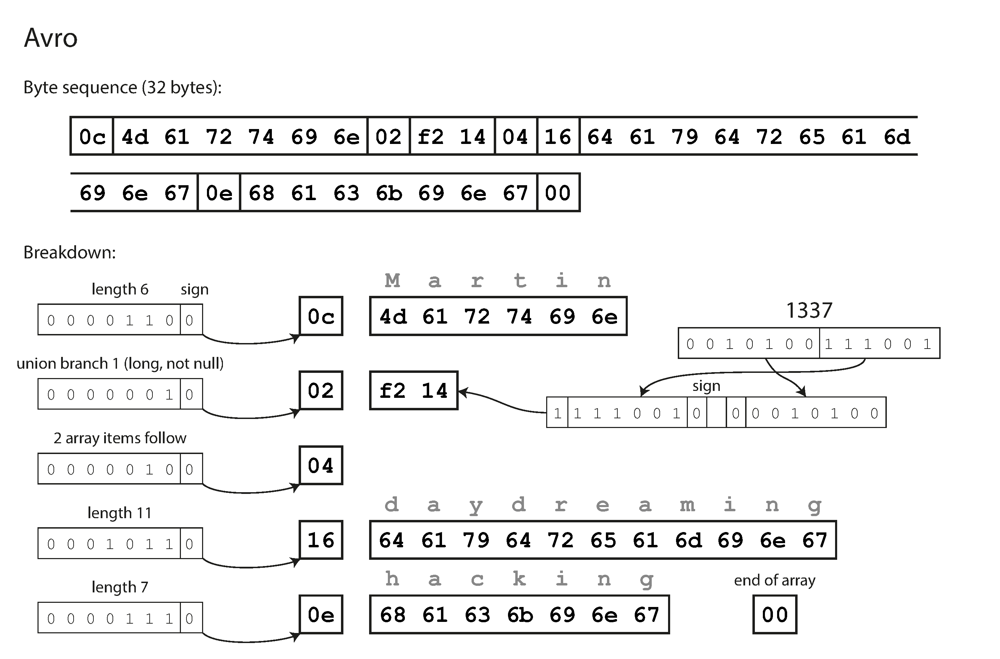
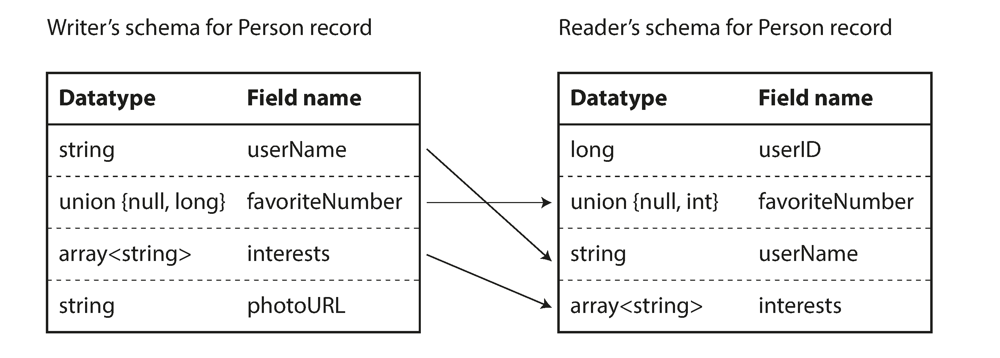
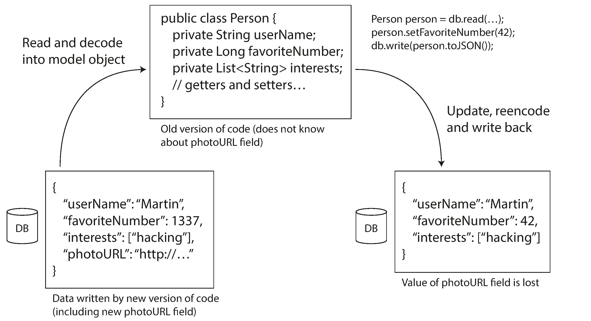

— Heraclitus of Ephesus, as quoted by Plato in Cratylus (360 BCE)
Applications inevitably change over time. This chapter explores how to encode data so that old and new code can coexist — enabling rolling upgrades and evolvability.
What We'll Cover
📦 Encoding Formats
JSON, XML, Thrift, Protocol Buffers, Avro — and their trade-offs
🔄 Schema Evolution
Backward & forward compatibility — how each format handles change
🌊 Modes of Dataflow
Databases, REST/RPC, and message-passing — where encoding matters
No field identifiers or type annotations in the data. Just values concatenated together.
Decoded by walking through fields in schema order. Reader MUST use the exact same schema... or must they? 🤔

Writer's Schema vs Reader's Schema
The key idea: they don't have to be the same — just compatible!
✍️ Writer's Schema
The schema used when the data was encoded. Compiled into the writing application.
📖 Reader's Schema
The schema the reading application expects. May be a different version!
Avro resolves differences by matching fields by name, filling in defaults for missing fields, and ignoring unknown ones.
Schema Resolution in Action
Fields matched by name (not position)
Different field order? No problem
Writer has field reader doesn't? Ignored
Reader expects field writer doesn't have? Filled with default
To maintain compatibility: only add/remove fields that have default values
Avro uses union types for nullability — no optional/required markers

How Does the Reader Find the Writer's Schema?
📁 Large Files
Hadoop-style: millions of records, same schema. Include schema once at file beginning.
→ Avro object container files
🗄️ Database Records
Different records may use different schemas. Include a version number per record.
→ Look up schema from version DB (e.g., Espresso)
🌐 Network
Two processes negotiate schema version on connection setup.
→ Avro RPC protocol
Avro's Superpower: Dynamically Generated Schemas
Want to dump a relational database to a binary file?
Generate an Avro schema from the database schema automatically
Each table → a record, each column → a field
Column name = field name (no manual tag assignment needed!)
Database schema changes? Just regenerate the Avro schema. No manual intervention.
With Thrift/Protobuf, you'd need to manually maintain tag-to-column mappings — "this kind of dynamically generated schema simply wasn't a design goal."
Encoding Format Comparison
Format
Size
Schema
Human-Readable
Evolution
JSON (text)
81 B
Optional
✅
⚠️
MessagePack
66 B
No
❌
⚠️
Thrift Binary
59 B
Required
❌
✅
Thrift Compact
34 B
Required
❌
✅
Protocol Buffers
33 B
Required
❌
✅
Avro
32 B
Required
❌
✅
The Merits of Schemas
Schema-driven binary encodings win on multiple fronts:
📦 More compact — omit field names from encoded data
📝 Living documentation — schema is required for decoding, so it's always up to date
✅ Compatibility checking — database of schemas lets you verify compatibility before deployment
🔧 Code generation — for statically typed languages: type checking at compile time
"Schema evolution allows the same kind of flexibility as schemaless/schema-on-read JSON databases provide, while also providing better guarantees about your data and better tooling."
Modes of Dataflow
Where and how encoded data travels between processes
Three Ways Data Flows
🗄️ Through Databases
Writer encodes, reader decodes. "Sending a message to your future self."
🌐 Through Services
REST, RPC — client encodes request, server decodes and responds.
📨 Through Messages
Async message passing via brokers — sender encodes, consumer decodes.
Dataflow Through Databases
Backward compatibility is clearly needed — your future self must decode what you wrote.
Forward compatibility is also needed — during rolling upgrades, older code may read data written by newer code.
⚠️ Danger: Old code reads a record with a new field, updates it, and writes it back — the new field might be lost!
Encoding formats handle this, but watch out at the application level.

Data Outlives Code
"Within a single database you may have some values that were written five milliseconds ago, and some values that were written five years ago."
You deploy new code in minutes. But old data stays forever in its original encoding.
Rewriting (migrating) all data is expensive for large datasets
Most relational DBs: ALTER TABLE ADD COLUMN with NULL default — no rewrite needed
LinkedIn's Espresso uses Avro for storage → Avro schema evolution handles it
Schema evolution lets the DB appear as if all data uses one schema, even if it contains records from many eras.
Archival Storage
Database snapshots for backup or data warehousing:
Dump is encoded with the latest schema — a consistent snapshot
Written once, immutable — perfect for Avro object container files
Good opportunity to encode in an analytics-friendly format like Parquet (column-oriented)
Dataflow Through Services
REST, SOAP, RPC — and the pitfalls of location transparency
Services and Microservices
Servers expose an API (service); clients connect and make requests.
A server can be a client to another service — this is the foundation of microservices
Key goal: services are independently deployable and evolvable
Services provide encapsulation — restrict what clients can do via the API
Old and new versions of servers and clients run simultaneously → data encoding must be compatible across versions.
Need backward compatibility on requests (new server reads old client's data)
Need forward compatibility on responses (old client reads new server's data)
Compatibility rules depend on the encoding format used (Thrift, Protobuf, JSON, etc.)
Cross-organization APIs often require indefinite compatibility — the provider can't force clients to upgrade. Common to maintain multiple API versions side by side.
Message-Passing Dataflow
Async communication via message brokers and actors
Message Brokers
Between RPC (low-latency, synchronous) and databases (persistent, async). Best of both:
📦 Buffer — absorbs load when recipients are unavailable
🔄 Auto-redeliver — prevents message loss on crashes
🔍 No address needed — sender doesn't need recipient's IP/port
📣 Fan-out — one message to many recipients
🔓 Decoupling — sender doesn't care who consumes
One-way: sender doesn't wait for reply. Responses go on a separate channel.
Examples: RabbitMQActiveMQNATSApache Kafka
Distributed Actor Frameworks
The actor model: concurrency via message-passing instead of threads/locks.
Each actor has local state (not shared), processes one message at a time
In distributed actor frameworks, messages cross nodes transparently
Location transparency works better here than RPC — actors already assume messages can be lost
Still need forward/backward compatibility for rolling upgrades!
Akka
Java default serialization (bad!) — replace with Protobuf
Orleans
Own versioning — new methods OK, don't change existing ones
Erlang OTP
Record schema changes are surprisingly hard 😬
Summary
Encoding, evolution, and the art of compatibility
Chapter 4 Summary
Encoding formats and their compatibility:
❌ Language-specific encodings — tied to one language, insecure, no evolution
⚠️ JSON/XML/CSV — widespread but vague about datatypes, optional schemas
📨 Message passing — async via brokers or actors; one-way communication
"May your application's evolution be rapid and your deployments be frequent."
Questions?
Designing Data-Intensive Applications • Chapter 4
MCQ Quiz
100 Questions • Test Your Knowledge
Q1Evolution
What do applications inevitably need to handle over time?
A) Static, unchanging requirements
B) Changes in requirements and features
C) Only hardware upgrades
D) Reduced user bases
Answer: B) Applications inevitably change as new requirements emerge and existing features are modified.
Q2Evolvability
What term describes the ease of making changes to a system?
A) Scalability
B) Reliability
C) Evolvability
D) Portability
Answer: C) Chapter 1 introduced evolvability — the ease with which you can modify a data system and adapt it to changing requirements.
Q3Rolling Upgrades
In a server-side application, how is a new version typically deployed?
A) By shutting down all servers simultaneously
B) By replacing all hardware
C) Via a rolling upgrade, deploying to a few nodes at a time
D) By asking users to clear their cache
Answer: C) With server-side apps, you perform a rolling upgrade, deploying the new version to a few nodes at a time for gradual transition without downtime.
Q4Client Updates
Why can't client-side updates be forced immediately?
A) Users may not install the update for some time
B) Clients are always online
C) Client apps never change
D) Servers push updates automatically
Answer: A) With client-side applications, you're at the mercy of the user, who may not install the update for some time.
Q5Backward Compatibility
What does backward compatibility mean?
A) Old code can read data from new code
B) New code can read data written by old code
C) Data never changes format
D) Code runs on older hardware
Answer: B) Backward compatibility means newer code can read data that was written by older code.
Q6Forward Compatibility
What does forward compatibility mean?
A) New code reads old data
B) Data is always encrypted
C) Old code can read data written by new code
D) Systems run faster over time
Answer: C) Forward compatibility means older code can read data that was written by newer code — trickier because old code must ignore additions.
Q7Encoding
What is in-memory data optimized for?
A) Disk storage
B) Network transmission
C) Efficient access and manipulation by the CPU
D) Human readability
Answer: C) In memory, data is kept in structures optimized for efficient access and manipulation by the CPU.
Q8Encoding
What is encoding also known as?
A) Deserialization
B) Decryption
C) Serialization or marshalling
D) Compilation
Answer: C) The translation from in-memory representation to a byte sequence is called encoding (also serialization or marshalling).
Q9Decoding
What is decoding also known as?
A) Compression
B) Parsing, deserialization, or unmarshalling
C) Hashing
D) Indexing
Answer: B) The reverse of encoding is called decoding (parsing, deserialization, unmarshalling).
Q10Language Formats
Why are language-specific serialization formats problematic?
A) They are too fast
B) They tie you to a particular programming language
C) They use too little memory
D) They are too readable
Answer: B) Language-specific encodings are tied to a particular language, making it very difficult to read the data in another language.
Q11Security
What security risk exists with language-specific deserialization?
A) Data is always encrypted
B) Decoding can instantiate arbitrary classes, enabling remote code execution
C) It requires special hardware
D) It only works on Linux
Answer: B) The decoding process needs to instantiate arbitrary classes — this is frequently a source of security problems.
Q12JSON Numbers
What number limitation does JSON have?
A) It can't represent zero
B) It doesn't distinguish integers from floating-point numbers
C) It only supports negatives
D) Numbers must be strings
Answer: B) JSON doesn't distinguish between integers and floating-point numbers and doesn't specify precision.
Q13JSON Binary
How does JSON handle binary data?
A) Native binary support
B) No binary string support — must use Base64 encoding
C) Only supports ASCII
D) Binary as integers
Answer: B) JSON has no datatype for binary strings; they must be Base64-encoded, adding ~33% size overhead.
Q14XML
What data type ambiguity exists in XML?
A) Only supports integers
B) Cannot distinguish a number from a digit string without external schema
C) No text support
D) Cannot nest data
Answer: B) XML cannot distinguish between a number and a string of digits unless you refer to an external schema.
Q15CSV
What fundamental problem does CSV have?
A) Too slow to parse
B) No schema — meaning of rows and columns is application-defined
C) Only stores numbers
D) Requires encryption
Answer: B) CSV does not have any schema, so it is up to the application to define the meaning of each row and column.
Q16Binary Encoding
Why use binary encoding over textual JSON?
A) More human-readable
B) More compact and faster to parse
C) Easier to debug
D) Works only with XML
Answer: B) Binary encodings for JSON are more compact and faster to parse than textual formats.
Q17MessagePack
How many bytes does MessagePack use vs 81-byte JSON?
A) 81 bytes
B) 44 bytes
C) 66 bytes
D) 100 bytes
Answer: C) MessagePack encoding of the example JSON is 66 bytes vs 81 bytes textual.
Q18Schema IDL
What do Thrift and Protocol Buffers require?
A) A text editor
B) A schema in an Interface Definition Language (IDL)
C) A web browser
D) A SQL database
Answer: B) Both require a schema for any data that is encoded, described using an IDL.
Q19Field Tags
How are fields identified in Thrift/Protobuf binary encoding?
A) By field name strings
B) By field tag numbers
C) By alphabetical order
D) By data type only
Answer: B) Encoded data contains field tag numbers instead of field names — compact aliases for fields.
Q20Thrift Protocols
What are Thrift's two binary encoding formats?
A) FastJSON and SlowJSON
B) BinaryProtocol and CompactProtocol
C) TCP and UDP
D) REST and SOAP
Answer: B) Thrift has BinaryProtocol and CompactProtocol.
Q21CompactProtocol
How does Thrift CompactProtocol save space?
A) Removes all data
B) Packs field type and tag into one byte, uses variable-length integers
C) Larger buffers
D) Uses gzip
Answer: B) CompactProtocol packs field type and tag number into a single byte and uses variable-length integers.
Q22Protobuf Repeated
What keyword marks a multi-valued field in Protobuf?
A) optional
B) required
C) repeated
D) singular
Answer: C) The 'repeated' keyword marks a field with zero or more entries.
Q23Adding Fields
What rule ensures forward compatibility when adding fields?
A) Field must be required
B) Each new field must have a new tag number
C) Delete old data
D) Name must be short
Answer: B) You add new fields with new tag numbers. Old code ignores unknown tags (forward compatibility).
Q24Required Fields
Why can't you add a new required field?
A) Required fields are ignored
B) Old data lacks the field, so old code would fail the check
C) Too much memory
D) Protobuf doesn't support them
Answer: B) Every new field must be optional or have a default value, because old data won't contain the new field.
Q25Removing Fields
What rule applies when removing a schema field?
A) Back up first
B) Only remove optional fields; never reuse the tag number
C) Rename first
D) Update all clients simultaneously
Answer: B) You can only remove optional fields and must never reuse the same tag number.
Q26Type Changes
What risk exists when changing int32 to int64?
A) No risk
B) Old code may truncate values that don't fit in 32 bits
C) Schema becomes invalid
D) Field auto-deleted
Answer: B) Old code reading new 64-bit data may truncate values if they exceed 32-bit range.
Q27Avro Encoding
How does Avro differ from Thrift/Protobuf?
A) Larger field tags
B) No tag numbers or field identifiers in encoded data
C) Only works with JSON
D) Fixed-length integers
Answer: B) Avro has no tag numbers — just values concatenated together.
Q28Avro Parsing
How does an Avro reader parse the encoded bytes?
A) Header in file
B) Matches writer's schema field order to determine layout
C) Trial and error
D) Database query
Answer: B) You go through fields in the writer's schema order and use it to determine datatypes.
Q29Schema Resolution
What happens when Avro writer and reader schemas differ?
A) Error thrown
B) Fields matched by name with type conversions where possible
C) Differences ignored
D) Reader's schema used exclusively
Answer: B) The Avro library resolves differences by matching fields by name and converting types.
Q30Avro Defaults
What rule applies when adding/removing Avro fields?
A) Any field can change freely
B) Only add/remove fields that have a default value
C) Fields must be numbered
D) Only strings can change
Answer: B) You may only add or remove fields that have a default value for compatibility.
Q31Avro Null
How do you make an Avro field nullable?
A) Set to null directly
B) Use a union type like union { null, string }
C) Add 'nullable' keyword
D) Use 'optional' modifier
Answer: B) Avro uses union types — e.g., union { null, long, string } — to allow null values.
Q32Object Container
How is the writer's schema communicated in a large Avro file?
A) Each record has the schema
B) Writer's schema included once at the beginning of the file
C) Sent separately
D) Each field carries schema
Answer: B) In Avro's object container file, the writer's schema is included once at the beginning.
Q33Schema Registry
How are individual DB records' schemas tracked?
A) Schema in every record
B) Version number in each record, mapped to schema in a registry
C) Different format per record
D) Never tracked
Answer: B) A version number is included with each record and mapped to a schema in a schema registry.
Q34Avro RPC
How is schema communicated during Avro network connections?
A) Sent with every message
B) Negotiated at connection setup, used for the connection lifetime
C) Hard-coded
D) Schemas not used
Answer: B) The two parties negotiate schema at connection setup and use it for the lifetime of the connection.
Q35Dynamic Schemas
Why is Avro good for dynamically generated schemas?
A) Requires manual updates
B) Uses field names (not tags) so schemas auto-generated from DB schema
C) Only for static schemas
D) Slower than others
Answer: B) Since Avro uses field names, a new schema can be auto-generated from a DB schema without manual tag assignment.
Q36Code Generation
What is Avro's stance on code generation?
A) Always required
B) Optional — can be used without code gen in dynamic languages
C) Not supported
D) Java only
Answer: B) Avro is often used without code generation in dynamically typed languages.
Q37Schema Benefits
Which is NOT a benefit of schema-based binary encoding?
A) Compact encoding
B) Schema as documentation
C) Human readability of encoded data
D) Compatibility checking
Answer: C) Binary encodings are not human-readable. Benefits are compactness, documentation, compatibility, and code gen.
Q38Documentation
Why are schemas valuable as documentation?
A) Replace code comments
B) Required for decoding, so guaranteed to be up-to-date
C) Written in natural language
D) Marketing only
Answer: B) The schema is required for decoding, so it's guaranteed to be up to date.
Q39Dataflow Modes
What are the three main dataflow modes?
A) HTTP, FTP, SMTP
B) Databases, service calls, and async message passing
C) USB, Bluetooth, WiFi
D) stdin, stdout, stderr
Answer: B) Through databases, through service calls (REST/RPC), and through asynchronous message passing.
Q40DB Dataflow
What role does a process writing to a DB play?
A) Consumer
B) Sends a message to its future self
C) Deletes records
D) Compresses data
Answer: B) Writing to a DB encodes data that a future process will decode — sending a message to your future self.
Q41DB Compatibility
What compatibility is needed when newer apps write DB data read by older apps?
A) None
B) Forward compatibility — old code must read new code's data
C) Database crashes
D) Only backward
Answer: B) Forward compatibility is needed because old code must be able to read data written by newer code.
Q42Data Preservation
What problem occurs when old code reads and rewrites a DB record?
A) Record encrypted
B) New fields unknown to old code may be lost/overwritten
C) Index corrupted
D) Record deleted
Answer: B) If old code re-encodes a record, new fields it doesn't know about may be lost in translation.
Q43Schema Migration
How do most relational DBs handle adding new columns?
A) Rewrite entire table
B) ALTER TABLE with null default — no data rewrite needed
C) Create new table
D) Full backup required
Answer: B) Most relational databases allow adding a column with a null default without rewriting existing data.
Q44Data Outlives Code
Why does 'data outlive code'?
A) Data is smaller
B) You may replace code many times, but data persists for decades
C) Code deleted after compilation
D) Data is encrypted
Answer: B) Data outlives code — you may replace application code many times, but underlying data remains.
Q45Archival
What format is recommended for data dumps to archival storage?
A) CSV only
B) Avro with a consistent latest schema
C) Raw binary
D) Microsoft Word
Answer: B) Formats like Avro object container files are a good fit, encoding all records with a consistent latest schema.
Q46REST
What does REST build upon?
A) OOP
B) HTTP principles — URLs for resources, HTTP features for caching/auth
C) Binary protocols
D) Shared memory
Answer: B) REST builds upon HTTP, using URLs to identify resources and HTTP features for cache control and authentication.
Q47SOAP
What problem does SOAP have?
A) Too simple
B) Complex WS-* standards and interoperability issues
C) No XML support
D) Too fast
Answer: B) SOAP has a complex multitude of related standards (WS-*) with frequent interoperability problems.
Q48REST vs SOAP
What has been the industry trend?
A) SOAP growing
B) REST gaining popularity; SOAP declining
C) Both equal
D) Neither used
Answer: B) REST has been gaining popularity, especially for cross-organizational APIs, while SOAP has fallen out of favor.
Q49RPC Flaw
What is the fundamental flaw of RPC?
A) Too fast
B) Tries to make network calls look like local calls, hiding real differences
C) Java only
D) No parameters
Answer: B) RPC tries to make network calls look like local function calls — fundamentally flawed because they're very different.
Q50Network vs Local
Which is NOT a difference between network and local calls?
A) Network calls are unpredictable
B) Network calls may timeout
C) Local calls always take the same time
D) Network calls need parameter encoding
Answer: C) Local calls don't always take the same time, but variability is far less. The key differences are unpredictability, timeouts, and encoding needs.
Q51Idempotence
What can retrying a failed network request cause?
A) Nothing — always safe
B) Action performed multiple times if request was processed but response lost
C) Server auto-detects
D) Client crashes
Answer: B) If the request was processed but the response lost, retrying causes the action to happen multiple times.
Q52Modern RPC
Which is a modern RPC framework?
A) CORBA
B) gRPC
C) DCOM
D) Java RMI
Answer: B) Modern RPC frameworks include gRPC (Protocol Buffers), Finagle, and Rest.li.
Q53Futures
What do Finagle and Rest.li use for async RPC?
A) Threads
B) Futures (promises)
C) Callbacks only
D) Polling
Answer: B) Finagle and Rest.li use futures (promises) to encapsulate asynchronous actions that may fail.
Q54gRPC Streams
What does gRPC support beyond request/response?
A) Only sync calls
B) Streams — series of requests and responses over time
C) File uploads only
D) DB queries
Answer: B) gRPC supports streams — a call can consist of a series of requests and responses over time.
Q55RPC Versioning
What compatibility assumption can be made for RPC versioning?
A) All clients update simultaneously
B) Servers update first, then clients
C) Clients update before servers
D) No versioning needed
Answer: B) Servers update first, clients second — so backward compat on requests and forward compat on responses.
Q56API Versioning
Where is API version commonly specified for REST?
A) Request body only
B) URL or HTTP Accept header
C) Server logs
D) Database
Answer: B) Common approaches include version number in the URL or HTTP Accept header.
Q57Message Passing
Async message passing is a cross between what?
A) TCP and UDP
B) RPC and databases
C) HTTP and FTP
D) Sockets and pipes
Answer: B) It's similar to RPC (low-latency delivery) and databases (message sent via an intermediary).
Q58Broker Benefits
What advantage does a message broker offer over direct RPC?
A) Slower delivery
B) Buffers when recipient unavailable, redelivers on crash, decouples sender/recipient
C) Requires both online
D) Auto-encrypts
Answer: B) Brokers buffer when recipient is unavailable, redeliver to crashed processes, and decouple sender from recipient.
Q59Communication
Message passing communication is typically:
A) Synchronous
B) One-way and asynchronous
C) Bidirectional and blocking
D) Encrypted by default
Answer: B) Usually one-way: a sender normally doesn't expect to receive a reply.
Q60Brokers
Which is a popular open-source message broker?
A) Apache Tomcat
B) RabbitMQ
C) Nginx
D) PostgreSQL
Answer: B) Popular message brokers include RabbitMQ, ActiveMQ, HornetQ, NATS, and Apache Kafka.
Q61Message Delivery
In the broker model, messages are delivered to:
A) Databases
B) Queues or topics
C) File systems
D) CPU registers
Answer: B) A process sends to a named queue or topic, and the broker delivers to consumers.
Q62Topic vs Queue
What distinguishes a topic from a queue?
A) Identical
B) Topic: fan-out (one-to-many); queue: each message to one consumer
C) Queues faster
D) Topics JSON only
Answer: B) Topics provide publish/subscribe (fan-out), queues deliver each message to one consumer.
Q63Actor Model
What is the actor model?
A) DB replication technique
B) Concurrency model where actors communicate via async messages
C) GUI framework
D) Testing methodology
Answer: B) The actor model is a programming model for concurrency where actors communicate by sending async messages.
Q64Actor Frameworks
Which is a distributed actor framework?
A) Django
B) Akka
C) React
D) jQuery
Answer: B) Distributed actor frameworks include Akka, Orleans, and Erlang OTP.
Q65Akka Encoding
What encoding does Akka use by default?
A) JSON
B) Java's built-in serialization
C) XML
D) CSV
Answer: B) Akka uses Java's built-in serialization by default, which lacks forward/backward compatibility.
Q66Orleans
How does Orleans handle rolling upgrades?
A) Natively supported
B) Custom serialization plugins needed; default doesn't support rolling upgrades
C) Automatic migration
D) Full restart required
Answer: B) Orleans default encoding doesn't support rolling upgrades; custom serialization plugins can be used.
Q67Erlang OTP
What challenge does Erlang OTP have with schema evolution?
A) Very easy
B) Difficult to map records across schemas; careful planning needed
C) No binary data
D) Automatic evolution
Answer: B) Mapping records across schemas is difficult in Erlang OTP despite its reputation for high availability.
Q68Large Numbers
What problem arises with 64-bit IDs in JSON?
A) JSON truncates all numbers
B) IEEE 754 floating-point can't represent integers greater than 2^53
C) JSON rejects them
D) Auto-converted to strings
Answer: B) Languages using IEEE 754 can't accurately represent integers larger than 2^53.
Q69Unicode
What advantage does JSON have regarding string encoding?
A) More languages
B) Mandates Unicode (UTF-8) making encoding unambiguous
C) Shorter strings
D) No string support
Answer: B) JSON mandates Unicode character strings, making character encoding unambiguous.
Q70Binary JSON
Which is NOT a binary JSON encoding?
A) MessagePack
B) BSON
C) BJSON
D) Protocol Buffers
Answer: D) Protocol Buffers is a separate schema-based binary encoding, not a JSON variant.
Q71Thrift Binary Size
How many bytes does Thrift BinaryProtocol use for the example?
A) 81
B) 34
C) 66
D) 59
Answer: D) Thrift BinaryProtocol uses 59 bytes for the example record.
Q72Thrift Compact Size
How many bytes does Thrift CompactProtocol use?
A) 59
B) 43
C) 34
D) 66
Answer: C) Thrift CompactProtocol is only 34 bytes.
Q73Protobuf Size
How many bytes does Protocol Buffers use?
A) 34
B) 59
C) 33
D) 66
Answer: C) Protocol Buffers encoding is 33 bytes — very similar to Thrift CompactProtocol.
Q74Varint
How do variable-length integers work?
A) Always 8 bytes
B) Top bit indicates more bytes follow; lower 7 bits carry value
C) Stored as strings
D) Only powers of 2
Answer: B) Each byte's top bit indicates whether more bytes follow; the lower 7 bits carry the value.
Q75Avro Size
How many bytes does Avro use for the example?
A) 59
B) 33
C) 32
D) 66
Answer: C) Avro encoding is only 32 bytes — the most compact with no tag numbers.
Q76Avro Null Default
What default value indicates a missing field in old Avro data?
A) 0
B) Empty string
C) null via union type
D) -1
Answer: C) Use union { null, long } with null default to handle missing fields from old data.
Q77Avro Names
Can Avro field names be changed?
A) Never allowed
B) Yes, by adding aliases for the old name in the new schema
C) Delete old field first
D) Only if schemas identical
Answer: B) Avro supports aliases: the new schema can contain aliases for old names to match old writer schemas.
Q78Schema Registry
What does a schema registry do?
A) Stores tables
B) Maps schema version numbers to schema definitions
C) Compiles code
D) Routes traffic
Answer: B) A schema registry maps version numbers to full schema definitions for encoding/decoding.
Q79REST Acronym
What does REST stand for?
A) Remote Execution and State Transfer
B) Representational State Transfer
C) Reliable Encrypted Secure Transport
D) Resource Encoding Standard
Answer: B) REST = Representational State Transfer.
Q80WSDL
What is WSDL used for?
A) Data compression
B) Describing SOAP APIs in machine-readable form for code generation
C) Encrypting messages
D) Routing traffic
Answer: B) WSDL describes SOAP web service APIs for code generation.
Q81OpenAPI
What is the REST equivalent of WSDL?
A) YAML
B) OpenAPI (formerly Swagger)
C) HTML
D) LaTeX
Answer: B) OpenAPI, formerly known as Swagger, describes RESTful APIs.
Q82Network Issues
What doesn't exist in local function calls?
A) Stack overflow
B) Network unpredictability — requests/responses may be lost or delayed
C) Memory allocation
D) Type checking
Answer: B) Network calls are unpredictable — they may be lost, delayed, duplicated, or arrive out of order.
Q83gRPC Cross-Language
How does gRPC handle cross-language RPC?
A) Java only
B) Protocol Buffers encoding enables calls between different languages
C) Translates source code
D) Same language required
Answer: B) gRPC uses Protocol Buffers which provides cross-language support.
Q84REST Debugging
What is a main advantage of REST over RPC?
A) REST is faster
B) Easy experimentation/debugging via browser or curl
C) Less bandwidth
D) More secure
Answer: B) REST allows requests via web browser or curl without code generation.
Q85Service Discovery
What infrastructure does RPC typically need?
A) Compiler
B) Service discovery to find network addresses of services
C) Text editor
D) Database
Answer: B) RPC frameworks need service discovery to locate services at runtime.
Q86Broker Decoupling
What does a message broker allow regarding recipients?
A) Must be running always
B) Sender doesn't need recipient's IP/port — just sends to a named queue
C) Recipient sends first
D) One sender per topic
Answer: B) The sender doesn't need to know the recipient's IP or port — the broker handles routing.
Q87Message Redelivery
What happens to broker messages when a recipient crashes?
A) Lost
B) Queued and redelivered when recipient recovers
C) Sender notified immediately
D) Encrypted
Answer: B) The broker buffers and automatically redelivers messages when the crashed process recovers.
Q88Production Encoding
What encoding should production message-passing systems use?
A) Plain text
B) Schema-based binary (Thrift, Protobuf, Avro)
C) HTML
D) Any format
Answer: B) Schema-based binary encoding ensures backward and forward compatibility.
Q89Base64 Overhead
What is the size overhead of Base64-encoding binary data?
A) No overhead
B) About 33% increase
C) 50% increase
D) Data shrinks
Answer: B) Base64-encoding increases data size by approximately 33%.
Q90Proto3
What changed in Protocol Buffers 3 regarding required/optional?
A) Same as before
B) Required keyword dropped; all fields optional by default
C) Optional dropped
D) Replaced with 'mandatory'
Answer: B) Proto3 dropped required/optional; all fields are optional by default.
Q91Thrift Lists
How does Thrift encode lists?
A) As JSON arrays
B) Dedicated list type with element type and count
C) Not supported
D) Repeated strings
Answer: B) Thrift has a dedicated list datatype parameterized with element type.
Q92Protobuf Lists
How does Protobuf handle lists/arrays?
A) Special list type
B) 'repeated' marker — same tag appears multiple times
C) Stored separately
D) JSON arrays internally
Answer: B) No list type — 'repeated' marker means the same field tag appears multiple times.
Q93Repeated Compat
What compat benefit does Protobuf's repeated approach provide?
A) None
B) Optional can be changed to repeated — old code reads last element
C) Prevents all bugs
D) Smaller files
Answer: B) An optional field can be changed to repeated. Old code reading new data sees only the last element.
Q94Avro Schema Languages
Which two schema languages does Avro support?
A) JSON and XML
B) Avro IDL (human) and JSON-based (machine)
C) YAML and TOML
D) SQL and GraphQL
Answer: B) Avro has Avro IDL for human editing and JSON-based for machine readability.
Q95Avro Union
What does union { null, string } mean?
A) Field must be string
B) Field can be either null or a string
C) Field ignored
D) Field encrypted
Answer: B) The field can be either null or a string — Avro's way of making a field nullable.
Q96Espresso
How does LinkedIn's Espresso handle schema evolution?
A) Rewrites data
B) Uses Avro for storage with Avro's schema evolution rules
C) No schema changes
D) Requires downtime
Answer: B) Espresso uses Avro for storage, enabling Avro's schema evolution.
Q97SOA
What does the chapter call the approach of composing services?
A) Monolithic
B) Service-oriented architecture (SOA) / microservices
C) Peer-to-peer
D) Client-server only
Answer: B) SOA, recently rebranded as microservices architecture.
Q98Middleware
What is message-oriented middleware?
A) Direct messaging
B) Sending messages between services via a broker
C) Email
D) WebSockets
Answer: B) Communication between services via a message broker is message-oriented middleware.
Q99Reply Pattern
How does a sender receive a reply in message passing?
A) Same message
B) On a separate channel — reply is sent to a reply/callback queue
C) Direct callback
D) Shared memory
Answer: B) Replies are sent as separate messages on a reply queue or callback queue.
Q100Key Thesis
What is the chapter's key thesis?
A) Always use JSON
B) Choose formats supporting schema evolution for independent component upgrades
C) Binary is always better
D) Avoid schema changes
Answer: B) Choose encoding formats that support backward and forward compatibility for independent upgrades.